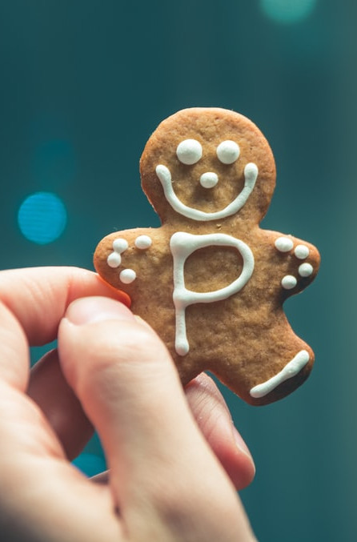

Beyond Wellness: Investigating the Influence of Luxury Positioning on Non-Alcoholic Beverage Desirability
Executive Summary (Overview)
This project investigates how luxury positioning—characterized by exclusivity, elevated pricing, refined packaging, and lifestyle associations—affects the desirability of non-alcoholic (NA) beverages among Millennials. While health and wellness are often cited as primary drivers behind the decline in alcohol consumption, we propose that luxury positioning may play an equally or even more significant role.

Adaptogen-infused beverages, which promise functional benefits like stress relief and enhanced well-being, occupy a unique space within the NA category. However, the efficacy of adaptogens is often difficult to verify, making brand cues especially important in shaping consumer trust and perceived value. In this context, visual and material elements—such as elevated design, ingredient transparency, and exclusivity—can serve as proxies for efficacy, helping brands distinguish themselves in a crowded market. This study aims to offer actionable insights for beverage companies seeking to innovate in the premium NA space and appeal to image-conscious Millennial consumers.
1.1 The Problem
In recent years, Millennials have begun to reject traditional alcohol consumption in favor of non-alcoholic alternatives. Existing literature often attributes this decline to health consciousness, wellness trends, shifting social norms, and the rise of the “sober curious” movement. While wellness-based explanations are well supported, emerging consumer behavior suggests that luxury positioning may also influence interest in non-alcoholic alternatives—though this area remains underexplored.
Importantly, not all non-alcoholic beverages serve the same function. While many products such as soda, seltzer, and juice are technically alcohol-free, our interest is in a specific category: non-alcoholic alternatives that are positioned as replacements for traditional alcoholic drinks—NA beer, wine, spirits, and zero-proof cocktails. These products are increasingly being marketed and consumed as lifestyle goods rather than simply health substitutes. Despite the rise in popularity of such products, there is limited research on how their luxury appeal affects desirability, especially among Millennials. Our study seeks to fill this gap, with a specific emphasis on adaptogen-infused beverages as a promising frontier for premium positioning within the NA market.
1.2 Intended Audience
Our primary audience is senior leadership and product strategy teams at beverage companies seeking to innovate in the NA space. Understanding consumer motivations beyond health—particularly around luxury positioning—can inform R&D, marketing, and pricing strategies.
1.3 Existing Literature
Previous research has extensively documented the decline in alcohol consumption among younger consumers, attributing the shift to health consciousness, changing social norms, and movements like “sober curious” (Burgess et al., 2022). These studies emphasize wellness as a primary driver and have largely informed the development of non-alcoholic alternatives.
However, there is limited research exploring how luxury positioning influences interest in these products—especially in the context of non-alcoholic spirits infused with adaptogens. While the luxury alcohol market (e.g., premium wines and spirits) is well studied (Hennigs et al., 2015; Dubois et al., 2021), it remains unclear whether the same drivers—such as exclusivity, premium packaging, and high price points—translate to consumer behavior in the NA space. Wright et al. (2022), for example, found that luxury cues in wine influenced perceived value and collectability, yet this type of research has not been meaningfully applied to the non-alcoholic beverage category.
Adaptogens are gaining popularity for their association with stress relief and wellness, with market projections estimating growth from $1.5 billion in 2023 to $2.7 billion by 2030 (Fatkullin et al., 2021). This positions adaptogen-infused beverages as a promising candidate for premium NA offerings.
Additionally, socioeconomic research suggests that higher-income households are more likely to invest in high-quality or luxury-positioned products (French et al., 2019), while marketing strategies emphasizing sensory and lifestyle appeal tend to resonate more with certain segments (Boles et al., 2022). These insights may be relevant for understanding consumer segmentation and the differential appeal of luxury-positioned NA beverages.
Our study builds on this foundation by investigating whether NA beverages, when positioned as luxury goods, generate increased desirability and purchase intent among Millennials. In doing so, we aim to contribute to both marketing scholarship and product strategy in a rapidly evolving category.
1.4 Anticipated Impact
This study aims to help beverage brands understand how luxury positioning influences the desirability of non-alcoholic spirits, particularly those infused with adaptogens. By identifying which elements—such as premium packaging, pricing, and exclusivity—most strongly impact purchase intent, the findings can inform product development, branding strategies, and consumer segmentation. Given the high risk and investment involved in launching new products with alternative functional ingredients, these insights will help brands position offerings more effectively. If luxury cues prove influential, companies may benefit from shifting away from wellness or abstinence-based messaging and toward association with elevated lifestyle. The findings could also support public health efforts by making healthier alternatives more appealing to image-conscious Millennial consumers.
2. Research Question
2.1 Main Research Question
To what extent does luxury positioning for non-alcoholic beverages with adaptogens influence purchase intent among Millennials?
2.2 Sub-Questions
To unpack the main question, we explore the following sub-questions:
- Perception of Luxury:
- How do Millennials define and perceive luxury in the context of NA beverages?
- Which specific elements—such as premium packaging, exclusivity, and aspirational lifestyle messaging—strongly influence Millennials’ intent to purchase NA beverages?
- Perception of Adaptogens:
- What perceived benefits of adaptogens make them appealing as premium ingredients to Millennial consumers?
- Which adaptogen effects are most likely to enhance a product’s luxury appeal (e.g., stress relief, energy boost)?
- Perception of Alcohol Content:
- How important is alcohol content labeling (e.g., 0.0% vs. <0.5%) in shaping the perceived sophistication or desirability of non-alcoholic beverages?
- Consumer Segmentation: Which socioeconomic segments are most responsive to luxury-positioned NA adaptogen beverages?
2.3 Definitions
- Sober curious: A social movement and mindset involving a conscious decision to reduce or eliminate alcohol intake for wellness reasons rather than addiction recovery.
- Luxury positioning: Product positioning that signals exclusivity, premium pricing, high-quality packaging, and aspirational lifestyle appeal.
- Non-alcoholic (NA) beverage: Alternatives to traditional alcoholic drinks, including non-alcoholic beer, wine, spirits, or zero-proof cocktails.
- Adaptogens: Beverages infused with herb or plant extracts, such as antioxidant compounds, that promote overall well-being and reduce the negative effects of stress.
- Millennials: People born between 1981 and 1996 (inclusive).
- Alcohol by volume (ABV): A standard measurement indicating the percentage of pure alcohol (ethanol) in a given volume of beverage.
3. Study Design
While beverage companies increasingly offer NA options in response to changing consumer behavior, a gap remains between luxury-positioned products and the broader NA market. This study tests how luxury consumption drivers influence preferences for NA adaptogen beverages among Millennials. Drawing from existing literature, we focus on three core drivers of luxury positioning:
- Branding & Packaging
- Price & Perceived Exclusivity
- Ingredient Quality & Transparency
Prior to full rollout, a pilot with ~50 participants will refine survey language, confirm product-stimuli clarity, and validate randomization. Insights from the pilot will inform revisions before launching the full experiment.
The main study (Jun–Aug) uses a between-subjects design in metropolitan retail settings. Participants consent to anonymous data collection and then sample one product condition via tablet prompt:
- Luxury Packaging: Sleek, premium glass bottles to signal aesthetic value.
- Premium Pricing: 50% higher price point to signal exclusivity.
- Lifestyle-Enhancing Adaptogen Framing: Emphasizes high-quality, natural ingredients and lifestyle benefits.
- 0% ABV Labeling: Explicit “0.0% ABV” to emphasize complete alcohol avoidance.
- Control: Standard aluminum packaging, moderate price, and general wellness description.
After sampling, participants complete a survey assessing purchase intent, perceived luxury, and attitudes toward NA beverages, plus demographics, adaptogen awareness, and drinking habits.
- Appeal of Lifestyle-Enhancing Adaptogens: “Including adaptogens that boost productivity and creativity increases my interest in trying a non-alcoholic spirit.”
- Quality Comparison: “I perceive NA beverages with an upscale image as higher quality.”
- Perceived Health & Wellness: “I believe adaptogens offer cognitive benefits vs. traditional options.”
- Purchase Likelihood: “I am more likely to try a NA spirit if positioned as premium and exclusive.”
4. Data
4.1 Data Generating Process
A between-subjects quantitative experiment assigns participants to one of five conditions to measure the causal impact of luxury cues on purchase intent.
4.2 Preliminary Research
A pilot (n~50) validates survey language, randomization, and clarity of luxury cues before full rollout.
4.3 Covariates
- Demographics: Age, income, education, occupation, location (urban/suburban).
- Behavioral Factors: Drinking frequency, NA purchase history, adaptogen familiarity.
- Psychographics: Lifestyle preferences, luxury brand affinity.
4.4 Intervention & Data Collection
Pre-Exposure Survey: Collects covariates.
Random Assignment: Tablet prompt to one of five conditions.
Table 1: Experimental Conditions and Manipulated Variables
| Group | Element | Description |
|---|---|---|
| Control | None | Standard packaging, moderate price, general description. |
| Packaging | Luxury Packaging | Sleek glass bottle for premium aesthetic. |
| Pricing | Premium Pricing | 50% higher price to signal exclusivity. |
| Framing | Adaptogen Framing | Ashwagandha described as productivity booster. |
| ABV | 0% ABV Labeling | Explicit “0.0% ABV” for full alcohol avoidance. |
Post-Exposure Survey: Measures purchase intent, perceived luxury, willingness to pay, and realism; captures demographics and adaptogen awareness.
5. Sample
5.1 Population
Millennials (ages 29–44) in the 10 largest U.S. metropolitan areas (population >500k).
5.2 Sampling Frame
Inclusion: Ages 29–44, resident of selected metro area, English proficiency.
Exclusion: Outside age range, non-residents, or non-English speakers.
5.3 Technique & Sample Size
Stratified random sampling by urban/suburban grocery stores. Target n=1000 (200 per group) for α=0.05, power=80%.
5.4 Randomization
Computer-generated assignment with income stratification.
5.5 Mitigating Bias
- Selection Bias: Peak-hour in-store recruitment.
- Non-Response Bias: Incentives (e.g., $10 gift card).
6. Hypotheses
6.1 Main Hypothesis
H0: Luxury positioning of NA adaptogen beverages does not affect purchase intent.
H1: Luxury positioning significantly increases purchase intent.
Test: Compare mean purchase intent across conditions using composite luxury cue index.
6.2 Sub-Hypotheses
- Packaging: H0=no difference; H1=higher intent with premium packaging; Test=Likert comparisons.
- Adaptogen Framing: H0=no effect; H1=higher intent with lifestyle framing; Test=mean differences.
- ABV Label: H0=no effect; H1=higher intent for 0.0% ABV; Test=between-group comparison.
- SES: H0=no correlation; H1=higher SES ↑ intent; Test=correlation analysis.
- Geography: H0=no difference; H1=urban > suburban intent; Test=mean comparison.
7. Variables
7.1 Independent Variables
- Positioning Type: Treatment vs. Control presentation.
- Packaging Type: Glass bottle vs. aluminum can.
- Adaptogen Framing: Lifestyle vs. general wellness.
- ABV Label: “0.0% ABV” vs. “<0.5% ABV”.
7.2 Dependent Variable
Purchase Intent: Likelihood to purchase measured on a 7-point Likert scale.
7.3 Covariates
- Socioeconomic Status (SES) index
- Geographic location (urban/suburban)
- Alcohol consumption frequency
- Adaptogen familiarity
- Lifestyle preferences & brand affinity
- Perceived realism
8. Statistical Method
Split data: exploratory (30%) for assumption checks and confirmatory (70%). Use Mann-Whitney U tests for non-parametric comparisons and ordinal logistic regression for multivariate analysis, reporting odds ratios for key cues and demographics.
9. Potential Risks
9.1 Scientific Validity
- Ecological Validity: Controlled by measuring perceived realism.
- Self-Reporting Bias: Anonymity and neutral wording.
- Construct Validity: Pilot to refine luxury measures.
- Experimenter Bias: Standardized protocols and training.
- Sampling Bias: Stratified recruitment across times and locations.
9.2 Stakeholder Expectations
- Feasibility concerns mitigated by detailed budgets and contingency plans.
- Timeline concerns addressed with transparent Gantt charts.
9.3 Legal & Ethical
- Data privacy via informed consent and secure Qualtrics platform.
- No identifiable data; encrypted tablets and secure storage.
10. Deliverables
Study timeline: ~5.75 months with key deliverables:
- Pilot Phase (May, 1 month): Refine surveys, validate randomization, finalize prototypes.
- Experiment (Jun–Aug, 3 months): Product exposure and surveys.
- Analysis (Sept, 1 month): Clean and analyze data.
- Research Paper (Oct, 3 weeks): Submit to Beverages journal.
- Conference Presentation: Present at Innovation in Drinks conference.
References
- Boles, D. Z., Turnwald, B. P., Perry, M. A., & Crum, A. J. (2022). Emphasizing appeal over health promotes preference for nutritious foods in people of low socioeconomic status. Appetite, 172, 105945. doi.org/10.1016/j.appet.2022.105945
- Burgess, A., Yeomans, H., & Fenton, L. (2022). ‘More options...less time’ in the ‘Hustle Culture’ of ‘Generation Sensible’: Individualization and Drinking Decline Among 21st Century Young Adults. British Journal of Sociology, 73. doi.org/10.1111/1468-4446.12964
- Chesak, J. MSJ. (n.d.). The No BS Guide to Adaptogens for Hormonal Balance and Stress. Healthline. healthline.com
- Dubois, D., Jung, S., & Ordabayeva, N. (2021). The psychology of luxury consumption. Current Opinion in Psychology, 39, 82–87. doi.org/10.1016/j.copsyc.2020.07.011
- Fatkullin, R., et al. (2021). Explaining Consumer Intentions for Foods with Antioxidant Properties. Intl J Food Sci, 2021, 9971425. doi.org/10.1155/2021/9971425
- French, S. A., Tangney, C. C., Crane, M. M., Wang, Y., & Appelhans, B. M. (2019). Nutrition quality of food purchases varies by household income: The SHoPPER study. BMC Public Health, 19(1), 231. doi.org/10.1186/s12889-019-6546-2
- Hennigs, N., Wiedmann, K.-P., Klarmann, C., & Behrens, S. (2015). The complexity of value in the luxury industry. Intl J Retail & Distribution Management, 43(10/11), 922–939. doi.org/10.1108/IJRDM-07-2014-0087
- Wright, D. K., Yoon, H., Morrison, A. M., & Šegota, T. (2022). Drinking in style? Literature review of luxury wine consumption. British Food Journal, 125(2), 679–695. doi.org/10.1108/BFJ-06-2021-0661